In 1954 First Baptist West, known then as Brockland Mission, was formed. On February 25, 1968, Brockland Mission changed its name to First Baptist West and became a satellite church of First Baptist Church with a goal of reaching the growing number of people on the west side of Lawton. Our congregation worshiped in a building located at 61st and Ferris. In 1973 First Baptist West was constituted into a church and thus became an independent church and moved to the current location in 1982. In October of 2014, we dedicated a new wing of our building which doubled our space. FBW now strives to reach and disciple those whom Jesus died to save.